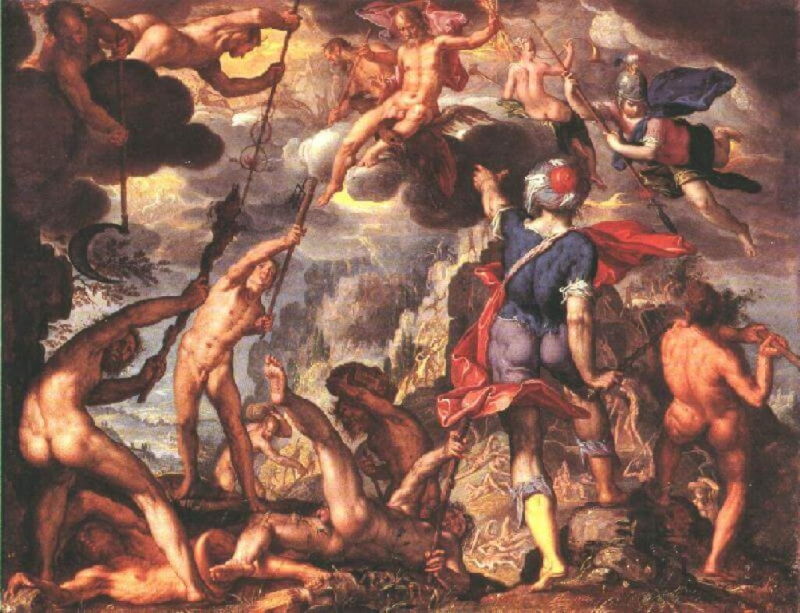
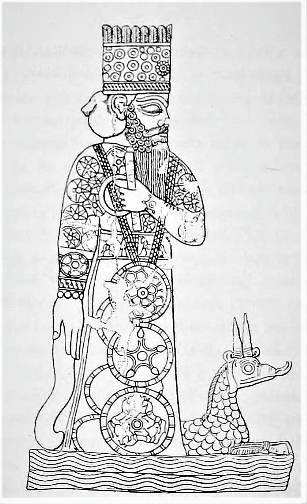
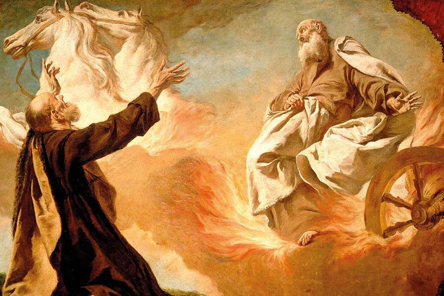
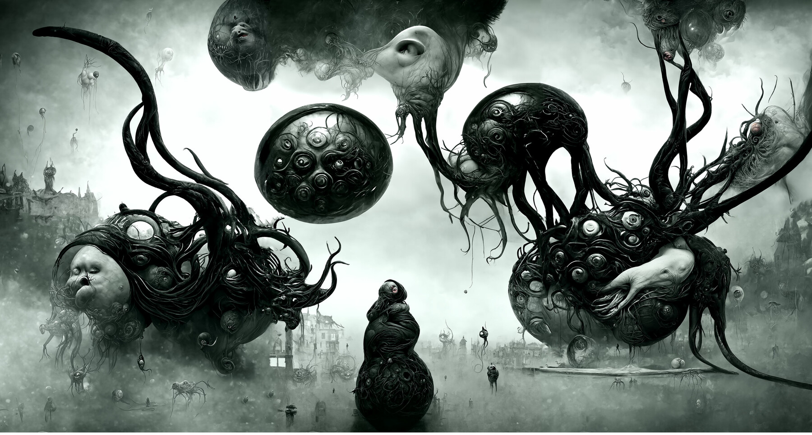
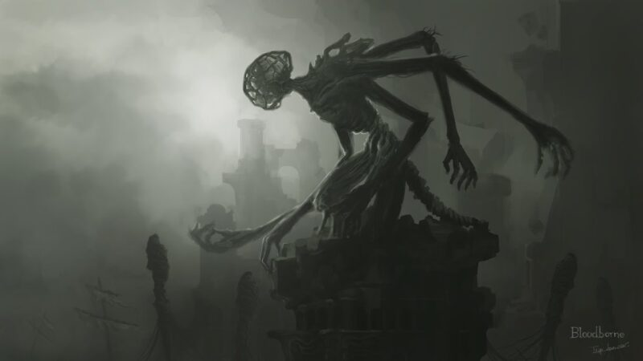
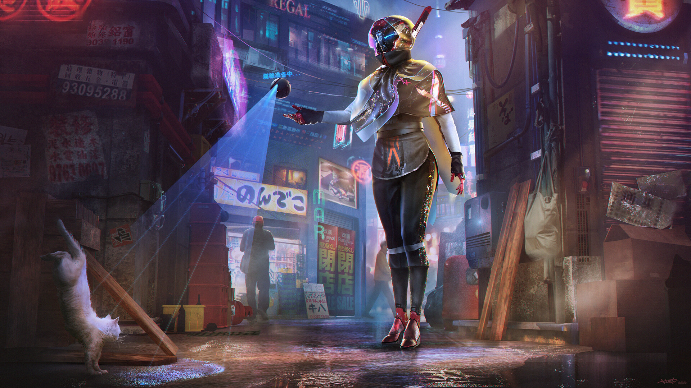
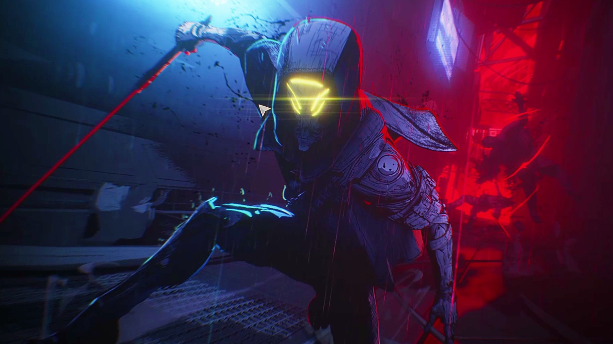
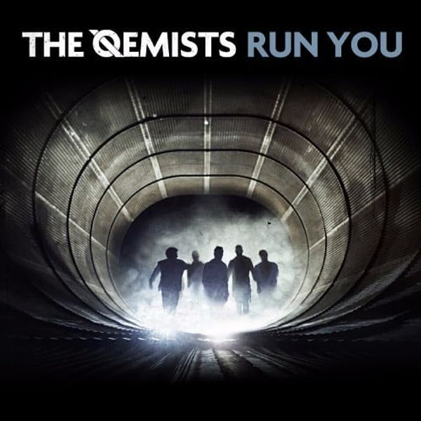
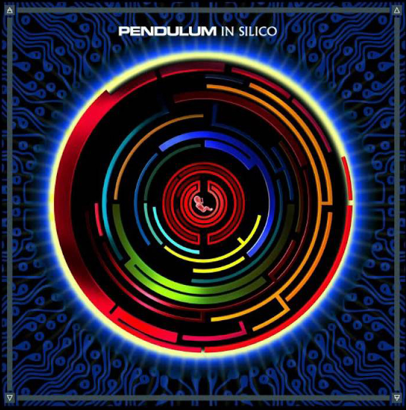

Gustos Culturales



Bueno en si me gustan hechos/historias mitologicas,
que sean curiosas e interesantes, como la mitologia griega,
nordica y hechos biblicos (independiente si son reales o no).
Me gustan distintos estilos artisticos, como impresionismo,
surrealista e incluso
simples bosquejos cargados de lineas


Me interesa algo esas historias del susodicho
'horror cosmico', autores como los de Ambrose Bierce o
Arthur Machen.
Incluso juegos como Bloodborne y Darkest Dungeon tocan
historias de estilos similar, que son muy atrapantes


Muy fascinado con el estilo 'Cyberpunk' ultimamente.
Mis gustos musicales


Géneros preferidos: Drumm & Bass, Techno,
Rock Alternativo, Psycho Trance, Electro House, Synthwave
y alguna antigua de por ahí.
Músicas Favoritas:
Propane Nightmares (Pendulum)
Send Me an Angel (Infected Mushroom)
Genesis (Justice)
Nada (Zoe)
Out of Touch (Hall & Oates)